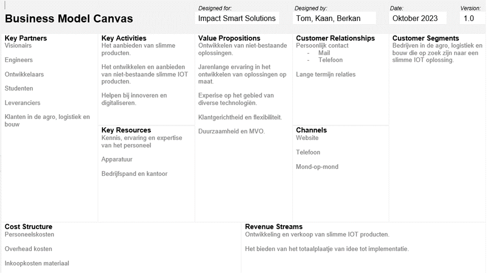
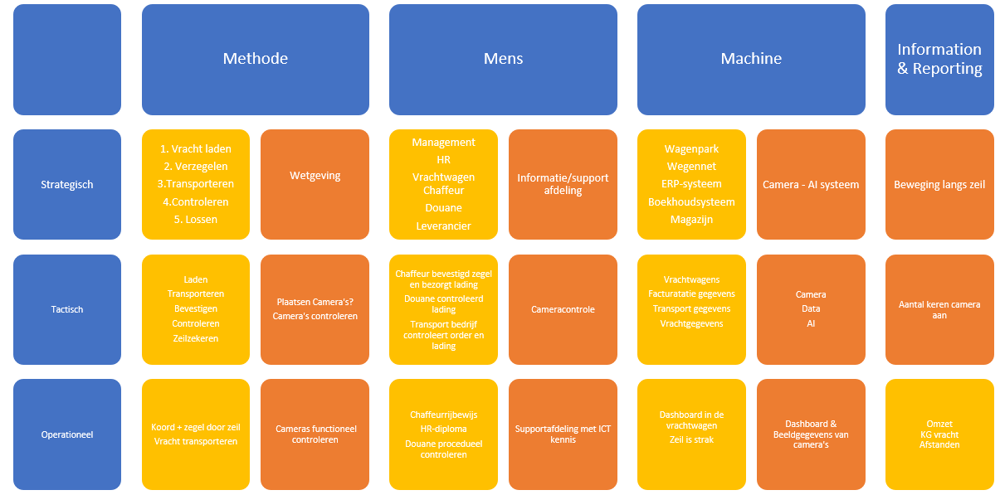

Tijdens het vak smart business leerde we opnieuw over business. Dankzij mijn huidige studie ICT met een bedrijfskundige profiel, waren de meeste termen binnen dit vak niet geheel onbekend. Al was het voor mij wel een tijdje geleden dat ik een vak heb gehad die zich geheel inzet voor Smart Business.
Ik vind business toch altijd wel leuk, want het weerspiegelt de werkelijkheid, en de werkelijkheid is dat economie een belangrijk onderdeel is van ons leven.
De eerste keer dat we echt officieel smart business hadden, hadden we het gehad over de aankomende periodes en de unieke methodes om elkaar te leren kennen. Ik vond dat op het begin wel een beetje raar, maar wel leuker dan de standaard manier van elkaar leren kennen, toch weer wel een keer wat anders. Ook tijdens de eerste pitch had ik geleerd om jezelf goed voor te stellen, bij ons op de opleiding werd dat niet gedaan en dat heb ik geleerd om nu wel te doen bij pitches.
De weken daarna werdt smart business vooral geleid door gastsprekers, zo hebben we business ideeën ontwikkeld voor problemen. Ik vond het ontwikkelen van zo'n idee met een plan erachter een leuke opdracht, omdat je creativiteit mag gebruiken om tot de beste uitkomsten te komen. Daarnaast hebben we mooie presentaties gekregen over design thinking en het bezoek de productie van EROMES die ons mooi lieten zien hoe zij technologie gebruiken en op welke manier. Voor mij is het niet vaak dat ik in zulke technologische productie omgevingen kom. Wat ik daarbij geleerd heb is hoeveel maatregelen die bedrijven hebben genomen. Daarbij weet ik nog dat tijdens de pitch tweede waren geworden, en ik vond dat ons idee het beste was. Toen won het idee wat goedkoper was, een leermomentje voor toen was dat je bij ideeen goed financieel helder moeten hebben wat de opbrengsten zullen zijn voor het bedrijf.
Tijdens de weken dat ik business heb gehad, heb ik de volgende 2 modellen toegepast op ons project. Dat is de Business Model Canvas, de BMC heb ik vaker gehad op mijn opleiding dus dat ging best wel flexibel, daarbij hadden we soms een aantal discussies over verschillende segmenten. En het TOM model, het TOM model heb ik niet eerder gehad, maar heeft wel duidelijke bedrijfskunidge roots met de drie lagen van een organisatie: Strategisch, tactisch, Operationeel.
Een Business Model Canvas is een soort diagram dat bedrijven helpt te begrijpen hoe ze waarde creëren voor klanten en geld verdienen. Het toont in één oogopslag de belangrijkste aspecten van een bedrijf, zoals wie de klanten zijn, wat het aanbiedt en hoe het geld binnenhaalt.
Het TOM-Model is een model dat een overzicht geeft welke activiteit een bedrijf op welke niveau wat uitvoert en hoe deze activiteiten worden uitgevoerd.
Neem contact met ons op via b.akdeniz@student.han.nl